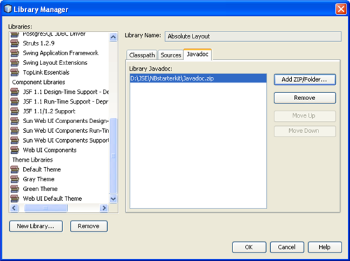
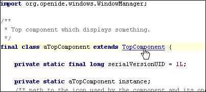

Adding Javadoc to the NetBeans IDE
You can easily add the Java API documentation to your NetBeans IDE installation. You need just to add the Javadoc ZIP file to the libraries used by the IDE.
To add Javadoc, do the following:
- Download the Javadoc ZIP file to your local machine from here.
- In the IDE, choose Tools > Libraries.
- In the Library Manager, open the Javadoc tab and click Add ZIP/Folder.

- Specify the Javadoc ZIP file and click OK.
You have added the Javadoc API documentation to the IDE's libraries. Now when you want to view the Javadoc API, hold down the Ctrl key and move your mouse over an identifier. If it has sources, it turns to a hyperlink and you can click to open the sources in a separate IDE's window.
